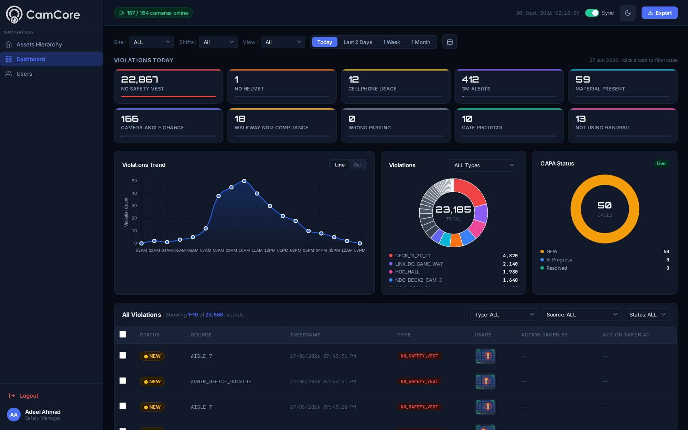

Consistent safety coverage across every zone, every shift.
- Real-time PPE detection for helmets, vests and gloves
- Fatigue and ergonomic risk monitoring across all facility zones
- Instant alerts to the right supervisor, every hour of every shift

Turns the CCTV you already run into live alerts for PPE, hazards and equipment faults.
Four jobs, one layer on the cameras you already have: protect people, keep machines running, control vehicles, catch hazards.
Live violations by type and zone, trends across the shift, and every corrective action tracked to closure.

Footage recorded, but reviewed only after incidents
Hazards detected and flagged in real time
PPE compliance checked during supervisory walkthroughs
Continuous compliance monitoring across every zone
Safety incidents discovered after they occur
Risk patterns surfaced before they escalate
Night shifts and low-supervision periods left unmonitored
Continuous coverage regardless of time or staffing levels
Manual footage review consuming safety team time
Automated detection, so your team focuses on action, not footage
Eight categories, from PPE to sector-specific rules. Pick a category to see what CamCore watches for.
The right protection, in every zone that needs it.
9 use casesHead protection checked continuously in every zone where it is mandated.
Vest detection on floors shared by people and moving equipment.
Goggles and shields enforced around cutting, welding, and chemical lines.
Task-specific PPE verified where handling and mechanical risk is highest.
Fall-arrest harness checked on platforms, roofs, scaffolds and open edges.
Gowns, gloves and masks verified at every cleanroom and clean-zone entry.
Hairnets, gloves and uniforms checked in kitchens and food-handling areas.
Ear defenders in high-noise areas such as presses, compressors and ramps.
Respiratory protection in dust, fume, paint and spray areas.
People and moving equipment, kept apart.
12 use casesEntry into machine, chemical, or maintenance exclusion zones.
People within an unsafe distance of moving material handling equipment.
Speeding forklifts and yard vehicles in pedestrian areas.
Trailer creep, dock-edge exposure, and unsafe loading practice.
People inside the danger envelope of loaders, dozers, cranes and haul trucks.
People leaving marked walkways in areas shared with vehicles.
Exclusion zones under suspended loads enforced while a lift is active.
Access to hazardous areas checked against the active permit window.
Vehicles backing up while a person is in the reversing path.
Forklifts travelling too fast or carrying loads raised while moving.
Vehicles and people meeting at aisle ends, doorways and blind corners.
People near unguarded edges, pits, excavations and open floor hatches.
Smoke, plumes, water and heat, caught early.
6 use casesVisible smoke and flame flagged before a detector or sprinkler is triggered.
Visible plumes, vapour and dust clouds from pipes, stacks and process areas.
Standing water and leaks in plant rooms, warehouses and basements.
Jams, overflow and material build-up along conveyors and transfer points.
Welding and cutting outside permitted areas, and fire watch after the work ends.
Missing, moved or blocked extinguishers, hose reels and alarm points.
A floor that stays clear, safe and in order.
6 use casesLiquid on the floor flagged before it becomes a slip incident.
Obstructed fire exits, walkways, and extinguisher access.
Pallets and racks stacked beyond safe height or overhanging aisles.
Workstation order, clutter and cleanliness scored against your standard.
Laydown areas, staging lanes and access routes kept clear.
Cables, hoses and loose material left across walkways.
Who is where, and whether they should be.
10 use casesPeople in areas outside their shift, role, or permit window.
Ignition risk in fuel, chemical, and packaging storage areas.
A person on the floor, or motionless in an area that should be active.
Fence-line and boundary crossings outside operating hours.
Two people passing a controlled door or turnstile on one credential.
People lingering in sensitive areas beyond a set time.
Cameras covered, moved, defocused or disconnected.
Visitors and contractors separated from their escort in controlled areas.
Bags, boxes and items left in walkways, entrances or restricted areas.
Vehicles parked or entering areas they are not cleared for.
Where time goes on the floor, measured.
9 use casesUnplanned stoppages and idle equipment surfaced with time stamps.
Headcount per zone and per shift, for staffing and evacuation checks.
Whether defined steps happen, in order, at the stations that matter.
Waiting at docks, gates, and stations, measured rather than estimated.
Choke points and cross-traffic that slow shifts, mapped over time.
Which doors are busy, idle or blocked, and for how long.
Trailer, gate and parking state without a yard walk.
Machines and mobile plant running, stopped or idle, by shift.
Time from dock arrival to departure for every vehicle.
Evidence and scorecards, ready for any audit.
7 use casesSafety and process compliance trended per site, shift and zone.
Safety performance tracked per subcontractor, with evidence.
Time-stamped clips and context for every claim, dispute and investigation.
Labels, palletising and end-of-line packing verified visually.
Lines confirmed clear before the next batch starts, with a record.
Store and site open/close checklists confirmed on camera.
Per-site safety and compliance reports exported for any period.
Rules built for specific kinds of sites.
9 use casesPeople kept clear of straddle carriers, reach stackers and terminal tractors.
Ramp proximity on every stand and foreign objects on aprons and taxi lanes.
People crossing the platform edge line or entering the track bed.
Concealment at high-risk fixtures, with the clip sent to loss prevention.
Falls in wards, corridors and waiting areas flagged for immediate response.
Cold-room and reefer doors left open beyond the allowed time.
Workers near open edges without guardrails or harness.
Light vehicles and people on haul roads while trucks are active.
Handwashing, attire and food-handling practice in every kitchen.
Common detections run from day one. Site- and sector-specific rules are configured during the pilot, without collecting training data.
See it on your camerasStill curious? We'll walk you through it on a short call.
Core9 develops artificial intelligence technologies that analyse video and operational data to help organisations monitor physical operations across fleets, warehouses and industrial environments. These systems detect operational risks, identify important events and generate insights that improve visibility across supply chain operations.
Core9 products connect to cameras, telematics devices and operational sensors across an organisation's physical infrastructure. AI models analyse these data streams continuously to detect events, identify anomalies and generate insights that help teams understand and manage operational activity.
Core9 products can monitor fleet operations, industrial environments, warehouses and distribution centres. By analysing video and operational data, the system shows how physical operations are running in real time.
Core9 products can connect to existing cameras, telematics devices and operational sensors, so organisations can deploy AI-based monitoring and analytics without replacing their hardware.
Insights into driver behaviour, operational risks, facility activity and supply chain operations — helping teams understand patterns, detect issues earlier and improve operational performance.
Initial deployments can typically be completed within a few weeks, depending on the scale of the environment. Many organisations begin with a pilot before expanding across fleets or facilities.
Smarter visibility. Faster decisions. Better control.